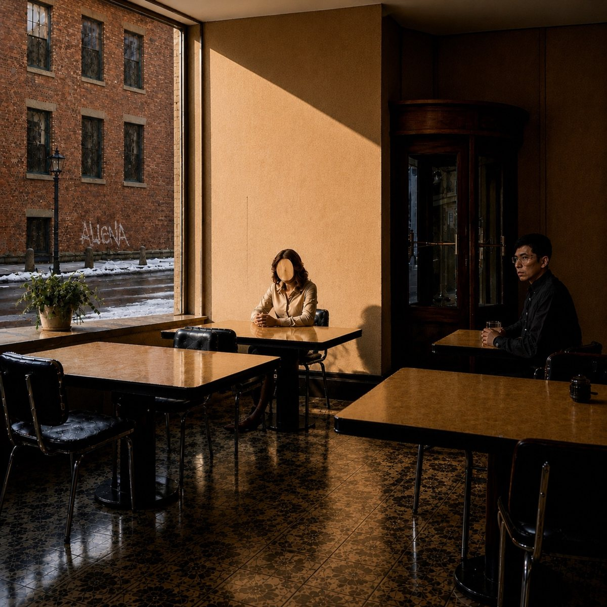

EP
a room after the grid
Out now · 2026.07.10
Tracklist:
- love and death from above — ALIENA & Tamuraryo
- inconsolable (feat. Tamuraryo)
- blue residue (feat. Tamuraryo)
ALIENAは、Ryucaによる音楽プロジェクト。
Ryucaは2000年代前半よりライブ／制作活動を行い、2007年にはAlienation名義で作品を発表。ALIENAは、その流れを受け継ぎながら、響きと身体感覚を起点に音を構築する新たな名義として始動した。
現代音楽、アンビエント、ダブ、インダストリアル、ネオソウルなどを背景に、硬質な陰影と揺らぎを含んだサウンドスケープを描く。
その音楽は、明確なメッセージを語るというより、都市の夜、明け方の冷えた光、昼間のふとした影のような場所に、聴き手の身体を静かに置く。
緊張と安堵、ノイズと美しさ、距離と親密さ。 相反する感情や手触りが、動きの中で均衡する瞬間を探っている。
名義は、ウィリアム・フォーサイス率いるフランクフルト・バレエ団の作品『Alienation』に由来。 混沌と規律、荒々しさとしなやかさが同居するその身体表現は、ALIENAの創作の原点となっている。
今回のリリースでは、全楽曲のトラックメイクをALIENAが担当。歌詞とボーカルにはTamuraryoを迎え、声を“風景の中に置かれた身体”として響かせている。
ALIENA is a music project by Ryuca.
Ryuca has been active in live performance and music production since the early 2000s, and released work under the name Alienation in 2007. ALIENA begins as a new name that carries that history forward, constructing sound from resonance and bodily sensation.
Drawing from contemporary music, ambient, dub, industrial music, and neo-soul, ALIENA creates soundscapes shaped by stark shadows, subtle movement, and unstable textures.
Rather than delivering a clear message, the music quietly places the listener’s body within spaces such as the city at night, the cold light of dawn, or a fleeting patch of shadow in the daytime.
Tension and relief. Noise and beauty. Distance and intimacy. ALIENA seeks the moment when opposing emotions and textures find balance through movement.
The name ALIENA is derived from Alienation, a work by William Forsythe and the Frankfurt Ballet. Its coexistence of chaos and discipline, rawness and grace, remains one of the origins of ALIENA’s creative practice.
For this release, ALIENA produced all tracks, with lyrics and vocals by Tamuraryo. The voice is treated not simply as a narrative center, but as a body placed within a shifting landscape.

EP
Out now · 2026.07.10
Tracklist:
Lead Single
2026.06.12
Listen / Stream